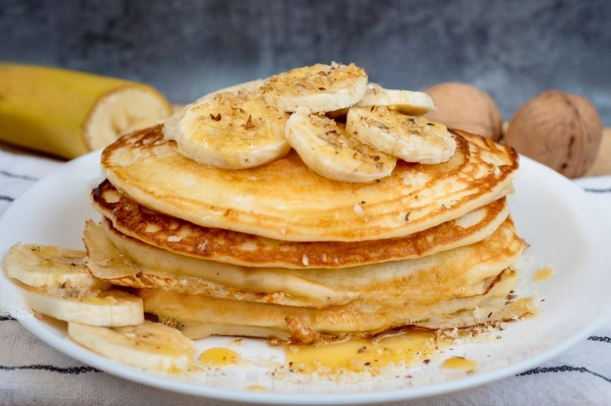

Banana Pancakes
Ingredients:
- 1 ripe banana, mashed
- 1 egg
- 1/2 cup all-purpose flour
- 1/2 cup milk
- 1 tablespoon sugar
- 1 teaspoon baking powder
- 1/2 teaspoon vanilla extract
- Pinch of salt
- Butter or oil for cooking
Instructions:
- In a mixing bowl, combine the mashed banana, egg, milk, and vanilla extract. Mix well.
- In a separate bowl, whisk together the flour, sugar, baking powder, and salt.
- Add the dry ingredients to the banana mixture and stir until just combined. Be careful not to overmix; a few lumps are fine.
- Heat a non-stick skillet or griddle over medium heat and add a small amount of butter or oil to coat the surface.
- Pour 1/4 cup of the pancake batter onto the skillet for each pancake.
- Cook for about 2-3 minutes, or until bubbles start to form on the surface.
- Flip the pancakes and cook for an additional 1-2 minutes, or until golden brown and cooked through.
- Repeat with the remaining batter, adding more butter or oil to the skillet as needed.
- Serve the Banana Pancakes warm with your favorite toppings, such as sliced bananas, maple syrup, or a sprinkle of cinnamon.
- Enjoy your fluffy and delicious Banana Pancakes!